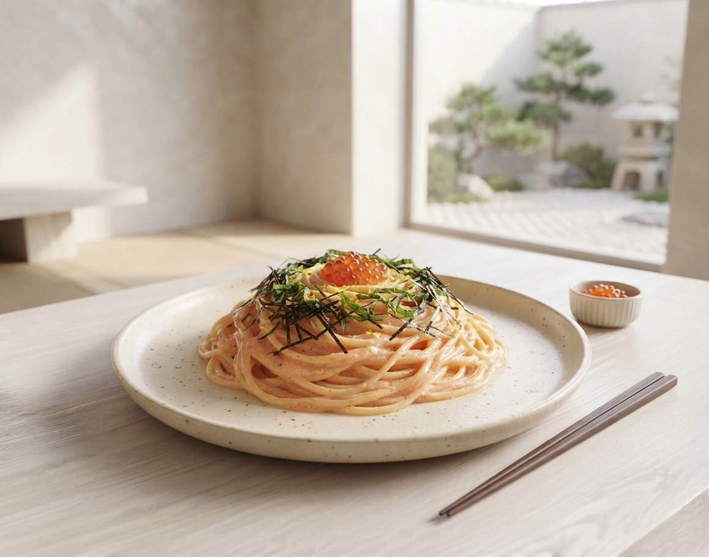
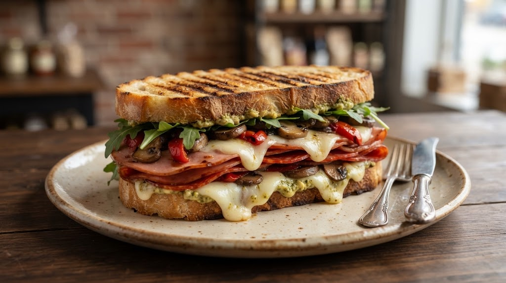
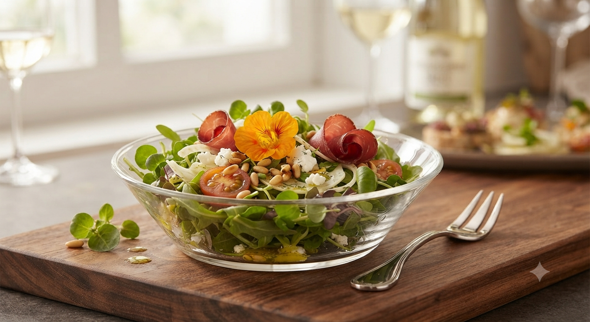
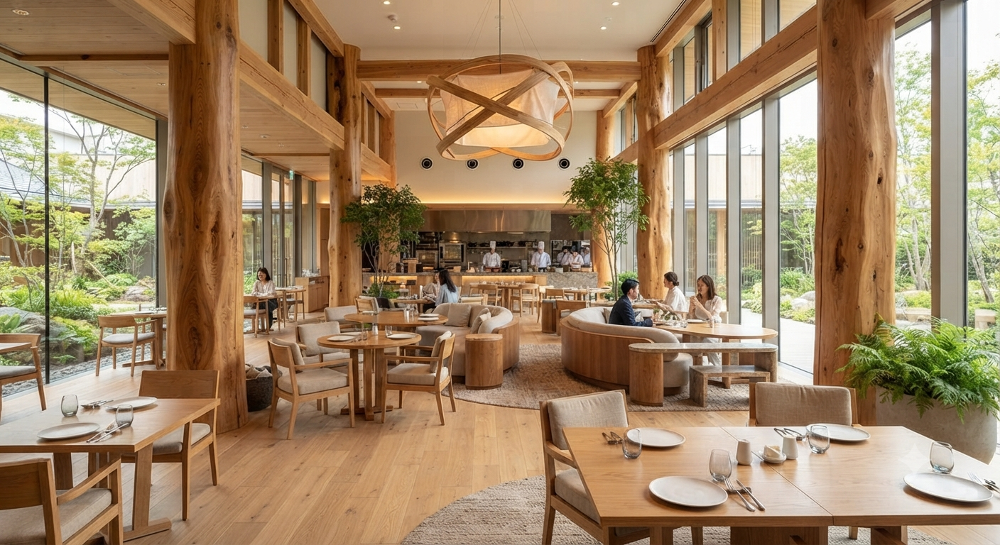

下北沢での13年、そして盛岡へ。
一戸竜太が描く、自由で温かなイタリアン。
Features of otto

01. Specialty
外はカリッと、中は溢れんばかりの具材。岩手県産の銘柄ポークや新鮮な野菜を詰め込んだ、ottoを象徴する一品です。

02. Freshness
「サラダに果物がたっぷりで嬉しい」と好評の声。バルサミコ酢をきかせた自家製ドレッシングが、野菜の甘みを引き立てます。

03. Ambiance
一戸シェフ自ら壁を塗り、木の質感を大切にした店内。一人でも、大切な誰かとでも、自然体で過ごせる「居場所」がここに。
1980年8月8日。創業者の誕生日がそのまま店名「otto（8）」の由来です。
東京・下北沢の名店で13年。イタリアンの真髄を学びながら、彼がずっと夢見ていたのは「もっと自由で、もっと身近な場所」。
鮮肉のつくね、ビストロ風ハンバーグ、そして不動のスペシャリテ「玉ねぎのポタージュ」。本場の技術に、居酒屋のような遊び心を加えた“一戸流イタリアン”は、盛岡の街に自然に溶け込んでいきました。
玉ねぎの甘みを極限まで引き出した、心を温めるポタージュ。季節を問わず、ottoに来たらまず味わっていただきたい一皿です。
Voice & Experience
「隅々にまで配慮が行き届いていてびっくり。テーブルには予約者名と共に素敵な言葉が。パスタを初めから二人分に盛り付けてくださったりと、素晴らしいとしか言いようがありません。」
「サラダにフルーツが沢山混じっていてテンション上がりました！ブランド豚のソテーも柔らかく甘みがあって最高。全体的に味付けはしっかりめで、顔みものが進みます。」
「野菜が新鮮でたっぷり食べられる。QRから注文＆決済可能でスムーズ。価格帯は少し高めだが、ひとつひとつ手がかかっているので納得のクオリティです。」
Store Information
住所：
〒020-0022 岩手県盛岡市大通2丁目8-35
営業時間：
17:00～0:00（月～日）
電話番号：
019-651-8878